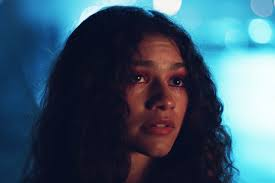
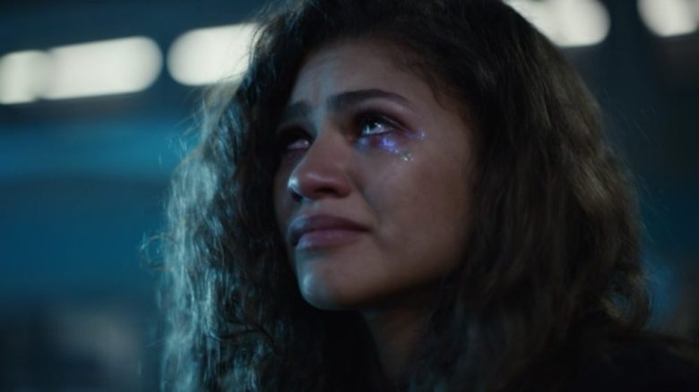
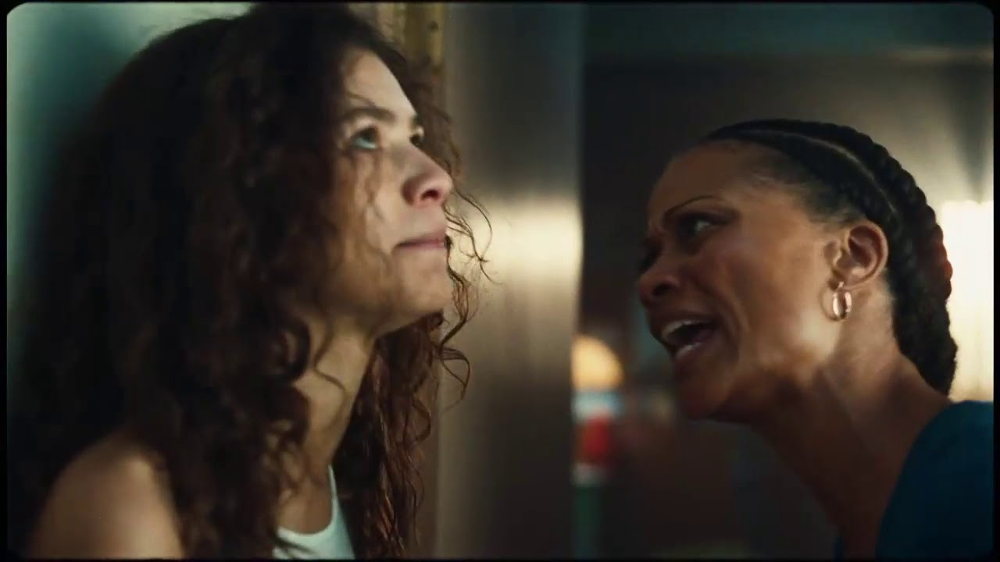
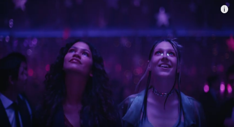

Rue struggles with her addiction to drugs. Her past has a role in this. She has suffered from panic attacks since she was 11 and was even given liquid Valium to calm her down. This along with the death of her father is what drove to start taking heavy drugs. And even though she recently OD’d, and her sister found her nearly lifeless body on the floor, she still pursues that high which takes her away from the pain.





Rue and her relationship with her mom is one of love and hate. Her mom is worried for Rue's health, especially after her overdose. As Rue gets older she sees the wrong past she is going on and becomes strict and agressive and other to protect Rue. Though Rue is rebellious and disobedient which leads to many arguments and fights.

Jules comes into town the summer Rue overdosed. Rue quickly catches feelings for her when seeing how wild and brave Jules is. The friendship and her crush on Jules motivates her to quit drugs. Though this helps her and her relationship with her family, jules becomes a subsitute for the drugs in Rue's life which becomes toxic when the realization that Jules doesn't exactly feel the same way for her becomes apparent.